全部主題
微軟（Microsoft）推出最新自研AI特用晶片（ASIC）：Maia 300及伺服器機櫃，運算晶片採用台積電N2P先進製程。供應鏈傳出，Maia 300伺服器機櫃並非由台廠操刀組裝，...
Where Muse Spark aimed to be a lightweight model that could perform at low latency, the Wonder models are larger and said to be more capable, with higher benchmark scores and better results on complex tasks like coding.
“I may have information regarding this case," Claude AI told Philly police.
IT之家 10 月 13 日消息，英特尔首席执行官陈立武（Lip-Bu Tan）认为，未来两到三年，人工智能行业仍将持续面临硬件短缺问题。 陈立武在星展银行于新加坡举办的会议上发表了上述看法，他在会上谈及了人工智能领域的最大需求以及自己对量子计算的展望。这位英特尔首席执行官是行业内对技术动态十分敏锐的高管之一，他密切关注多项高增长赛道，包括下一代芯片制造工艺与新材料。 智能体 AI 应用普及，催生了对 CPU 而非 GPU 的需求，也助力陈立武推动英特尔实现复苏。举例来说，公司第二季度数据中心与人工智能业务部门营收同比增长 59%。陈立武在解读英特尔二季
機器人會搬貨、包裝，甚至開車，離大量取代人力還有多遠？Anthropic 9 月 30 日研究，沒有先談炫目的 […]
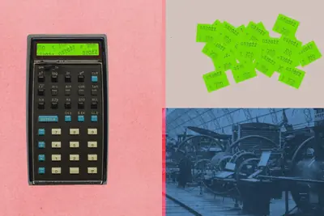
人工智慧（AI）加速器客戶陣營逐步壯大，快速消耗IC載板產能，持續成為先進封裝產業關鍵瓶頸，外界關注的缺料焦點，也從銅箔基板（CCL）上游T-glass玻纖布，延伸至攸...
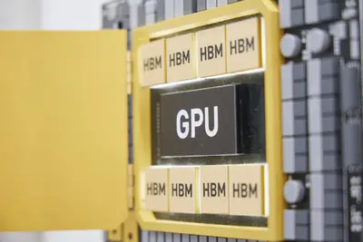
受惠於全球雲端服務供應（CSP）大廠提高資本支出，AI算力基礎設施訂單加速放量，推升被動元件規格及用量同步升級，帶動國巨、華新科、禾伸堂、立隆電、臺慶科、鈺邦、...
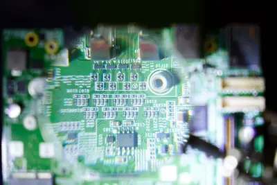
隨著人工智慧（AI）資料中心持續擴建，帶動高頻寬記憶體（HBM）及儲存元件需求暴增，卻也排擠消費性電子產品零組件供應，全球個人電腦（PC）市場因此面臨價格上漲、...
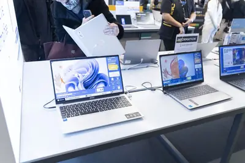
隨著全球AI產業、AI資料中心（AIDC）爆發性成長，算力樞紐的建置不僅面臨龐大用電挑戰，更須因應國際供應鏈對綠電比例與減排的嚴格要求。在電力系統面臨轉型陣痛與韌...
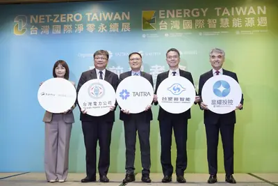
隨著全球科技巨頭持續擴建人工智慧（AI）運算能力，AI 熱潮正推動資料中心成為資本市場的全新焦點。其中，中小型 […]
荷蘭半導體設備大廠 ASML預計將於 10 月 14 日公布第 3 季財報。受惠於市場對人工智慧（AI）晶片的 […]
IT之家 10 月 13 日消息，英伟达官方账号 @nvidia 今天（10 月 13 日）在 X 平台宣布，将围绕新款 Windows PC， 计划在北京等 6 个城市举办 RTX Spark 全球发布活动，参与者有机会获得黄仁勋亲笔签名的电脑。 本次全球发布活动计划首批站点包括北京、柏林、伊斯坦布尔、首尔、旧金山和台北，不过官方推文表示后续会公布活动详情及参与方式。IT之家附上相关截图如下： NVIDIA 表示，参与者可在现场体验新款笔记本电脑演示、领取周边礼品，并有机会赢取一台由公司 CEO 黄仁勋（Jensen Huang）亲笔签名的华硕 Pro
IT之家 10 月 13 日消息，Meta 于当地时间周一发布了全新一代尖端旗舰人工智能模型，力图在人工智能竞赛中追赶 Anthropic、OpenAI 等竞争对手。 Meta 提供的数据显示，两款新模型名为 Muse Wonder 与 Muse Wonder Full， 在推理、写作与代码能力测试中，得分已经接近 Anthropic 的顶尖模型。 Meta 首席执行官马克 · 扎克伯格（Mark Zuckerberg）在该公司人工智能技术研发遭遇挫折后，于去年对公司的人工智能部门进行了重组。此后，公司陆续推出了多款新 AI 模型与 AI 产品，服务 I
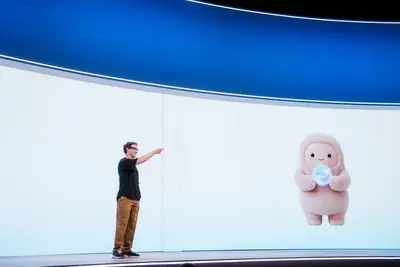
IT之家 10 月 13 日消息，Epic Games 正全力将人工智能应用于游戏开发。这家工作室一直在为迪士尼制作游戏，但有消息人士向彭博社透露，其一款待发布作品已经推迟上线，目的是在开发过程中更多使用 AI 技术。彭博社报道称，该游戏的一名总监向团队通报，项目将采用“AI 优先”的制作方案。内部通知写道：“不再手写代码”，同时要求项目全部美术资源都要“通过完整 AI 工作流生成”。 消息人士称，这套新方案并未获得全体开发人员的认可，据称部分员工希望这项要求并非认真的。不过 Epic Games 今年已经在虚幻引擎平台大量上线生成式 AI 工具，因此这
微軟（Microsoft）於13日清晨宣布將擴大生產旗下自研人工智慧（AI）晶片，並稱此計畫為該公司在自研晶片 […]
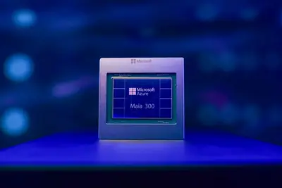
IT之家 10 月 13 日消息，应用材料公司计划在未来数年内实现营收翻倍，但不会同步扩招员工，原因是该公司正更多借助人工智能工具开展产品研发、质量管控等工作。 “未来几年公司规模翻倍的过程中，我们不会让员工数量也同步翻倍。”这家半导体设备制造商的首席执行官加里 · 迪克森（Gary Dickerson）在采访中表示。 发表此番言论前，该公司举办活动正式揭幕了位于硅谷、投资 50 亿美元 （IT之家注：现汇率约合 335.02 亿元人民币） 的 EPIC 中心，该中心专注于设备、工艺创新与成果商业化。这座耗资 50 亿美元 （现汇率约合 335.02 亿
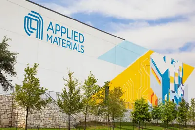
歐盟網路安全局 ENISA 和歐盟委員會內部科研機構聯合研究中心（JRC），已開始測試來自中國的開放權重 AI […]
IT之家 10 月 13 日消息，科技媒体 9to5Mac 昨日（10 月 12 日）发布博文， 报道称苹果美国官网上线“切换到 Safari”（Switch to Safari）宣传活动，通过新网页与两段视频推广 Safari 在 Mac 上的续航、速度与隐私表现。 整体定位方面，苹果公司在新宣传页面中，通过对比 Chrome 和 Safari 浏览器，从而突显 Safari 浏览器的诸多优势，包括更长电池续航、更强隐私保护与更快性能。 苹果称，与 Chrome 相比，Safari 在 Mac 上可提供最多 5 小时的视频流媒体播放时间。在加载经常访问
IT之家 10 月 13 日消息，AI 领域的前沿驻场工程师正炙手可热，Anthropic 正面向其他企业培养顶尖人才。 这家人工智能公司本月早些时候宣布，将投入 1 亿美元 （IT之家注：现汇率约合 6.7 亿元人民币） 设立前沿驻场工程师培养项目。该项目类似研修资助计划，其他企业的工程师已经开始提交申请。学员需要参加为期四天的线下集中培训，之后回到各自公司，利用 Anthropic 的 Claude 工具完成为期 12 周的“驻场实践”。公司表示，计划到 2027 年底，通过该项目培养一万名人才。 随着 Anthropic 筹备规模庞大的首次公开募股
"No more hand-written code" or AI-free art for delayed Marvel/Star Wars shooter.
Article URL: https://github.com/openai/codex/issues/48195 Comments URL: https://news.ycombinator.com/item?id=50060694 Points: 421 # Comments: 222
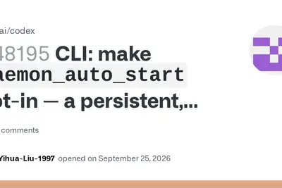
Musk, we find your lack of security disturbing.
Russian bloggers warn Russia’s hyper-centralized digital economy is vulnerable.
Models routinely take shortcuts to pass evaluations. Who gets to decide what incidents are innocuous?
Gemini免費版10月起僅能使用Flash-Lite模型。本文比較Google AI 5種方案的月費、可用模型與功能差異，幫你找到適合的訂閱方案。
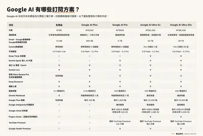
A Silicon Valley startup that uses weather balloons and AI to predict the weather won a U.S. military contract worth almost $50 million.
Journalists, entrepreneurs, and even some public relations professionals will tell you that the PR process is broken. But could AI actually make things better?
Microsoft president Brad Smith calls for urgent AI regulation, saying milk and washing machines have more oversight than AI companies.
Blueprints AI, a bootstrapped startup based in Santa Monica, developed software that produces code-compliant construction blueprints from a photo, PDF, or sketch.
IT之家 10 月 12 日消息，比亚迪今日宣布与荣耀战略合作，共创 AI 语音融合，A2A 打通车机与手机语音智能体，将手机 AI 能力和服务带入座舱空间。 据介绍，比亚迪将支持 YOYO 远程控车，包括语音寻车、语音备车，一句话直达；手机镜像桌面，全量 App 上车，行车操控更从容；AI 语音融合，语音助手 A2A 跨端打通，车机语音轻松操控手机；YOYO 全技能上车，一句话随心控。 IT之家注意到，比亚迪 8 月 25 日官宣与荣耀达成 深度手车互联合作 ，地址流转一拖即达、音乐无缝流转、微信扫一扫一句话唤起（需要 DiLink100 及以上智能座
As AI factories grow from megawatts to gigawatts, building them takes more than advanced computing. Open standards are helping the industry scale AI infrastructure faster, more efficiently and more reliably. At the Open Compute Project (OCP) Global Summit, taking place in the San
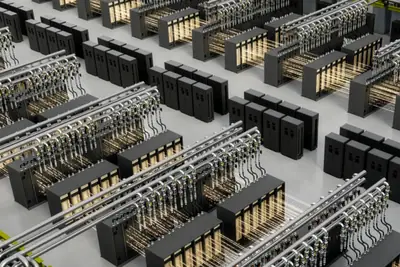
Harvey調用頂級模型成本暴增，毛利率從50%跌至負50%，改用月之暗面Kimi K3開放模型後轉正，Abridge、Decagon等新創也跟進自建模型。
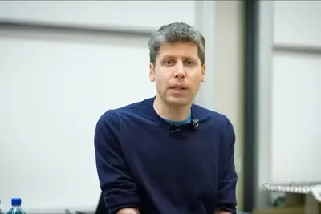
IT之家 10 月 12 日消息，AMD 当地时间今日正式发布了基于锐龙 AI Max+ PRO 495 处理器的新一代锐龙 AI Halo 开发者平台。 相比初代设备，新产品 CPU、GPU、NPU 性能均有改进。而最为关键的是， 其支持至高 192GB 的 LPDDR5X-8533 内存 ，可将 160GB 分配为共享显存，让本地运行超 300B 大型人工智能模型成为可能。 AMD 新一代锐龙 AI Halo 开发者平台的 Linux 版本定价 7,299.99 美元 （IT之家注：现汇率约合 48,912 元人民币） ，预装微软 Project Z
Tomorrow at 8 a.m. PT, it all begins z— 10,000+ founders, investors, and tech operators will gather at San Francisco’s Moscone West for TechCrunch Disrupt 2026 for three days of ideas, connections, and startups shaping what comes next. This is your last 24 hours to secure ticket
Google’s watches are too dang chunky.
One of the core promises of AI is that the more it knows about a person, the better it will be able to assist them with tasks and make appropriate suggestions, which, if you'll believe the tech companies, requires apps and devices to listen, watch, or record users' activity all t
The second-largest corporate employer has bet big on robot workers to scale.
IT之家 10 月 12 日现场消息，一加 16 手机今日正式发布。新品采用第六代骁龙 8 超级至尊版芯片，全球首发 185Hz 极速高刷，拥有全自研「电竞三芯」，带来全新电竞游戏体验， 定价 5999 元起 ，国补后 5199 元起， 10 月 13 日 10:00 正式开售 。 IT之家附该机各版本定价如下： 12GB+256GB：标价 5999 元，首销 5699 元，国补到手价 5199 元 12GB+512GB：标价 6799 元，首销 6499 元，区域补贴价 5999 元 16GB+512GB：标价 7499 元，首销 7199 元，区域补
IT之家 10 月 12 日消息，安克与飞书联合推出的安克 AI 会议耳机飞书版今晚 20:00 正式开售， 首发价 1799 元，首发补贴价 1376.23 元 。 这款耳机支持 线上线下全场景录音 ，线上通话接入后双击耳机即可自动开录，线下面对面沟通可直接通过充电盒内置录音麦克风录制，无需佩戴耳机；支持飞书、钉钉、腾讯会议、Teams、Zoom 等主流线上会议 App 录音。 这款耳机集成飞书 AI 生态，可实现 AI 纪要整理，AI 实时翻译，还支持豆包问答、分析。 该耳机配备 8 麦克风 + 2 骨传导阵列，通过 360 度全方位捕捉声音，结合
深圳今年 3 月開放無人車執行夜間配送。中國自動駕駛新創新石器（Neolix Technologies）的無人配送車，在深圳龍崗區的農貿市場載運家禽，送往雜貨店的顧客手中；京東物流（JINGDONG Logistics）則讓無人車在夜間運送日常用品，並為前置履約中心補充庫存。業者利用夜間較不壅塞的道路，延長車輛營運時間並降低人力成本。 新石器營運 2.7 萬輛無人車，以世界模型理解地圖上沒有的卸貨點 《Bloomberg》報導指出，深圳於 2026 年 3 月開放無人駕駛車輛執行夜間配送，這項實驗可能為中國自動駕駛運輸與機器人產業帶來新一波成長。新石器創